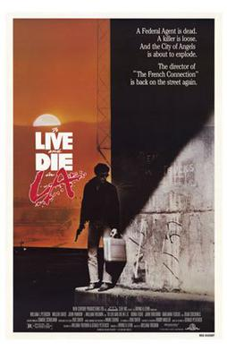

William Friedkin
1985
116 minutes
You've seen this, of course, but you don't remember seeing it. You were too young for Willem Dafoe to make a lasting conscious impression but old enough for him to make a lasting impression as a creepy villain. But the real head-trip here is seeing William Petersen as a sort of scummy bad-boy cop. You are sad that you didn't have this film in your recent memory when you saw your first episode of CSI, which would have greatly colored your enjoyment of that show. John Turturro being a dirtbag in this is also a lot of fun. Even Dean Stockwell makes an appearance. Even fucking Robert Downey Sr. makes an appearance. And Gary Cole!
You never fully got into this film when you were a kid because it was set in Los Angeles, and you have always had a slight revulsion for that city and southern California in general. Somehow all your travels have never brought you to southern California. You've never splashed around in the Pacific ocean. This used to be a point of pride, but now it's a mild embarrassment--but not one you feel like correcting. You generally haven't enjoyed your misadventures west of the Mississippi River.
If you thought too hard about it, you would find it ironic that several of your favorite punk bands when you were a teenager were based in California or Texas and rather loud and proud about the fact. Black Flag. Fear. The Butthole Surfers. The Dicks. Et cetera. But the dominant shallow car-based culture drowned out the bits of counterculture you loved, so you always avoided actually going there. Tant pis.
Time to choose something different: